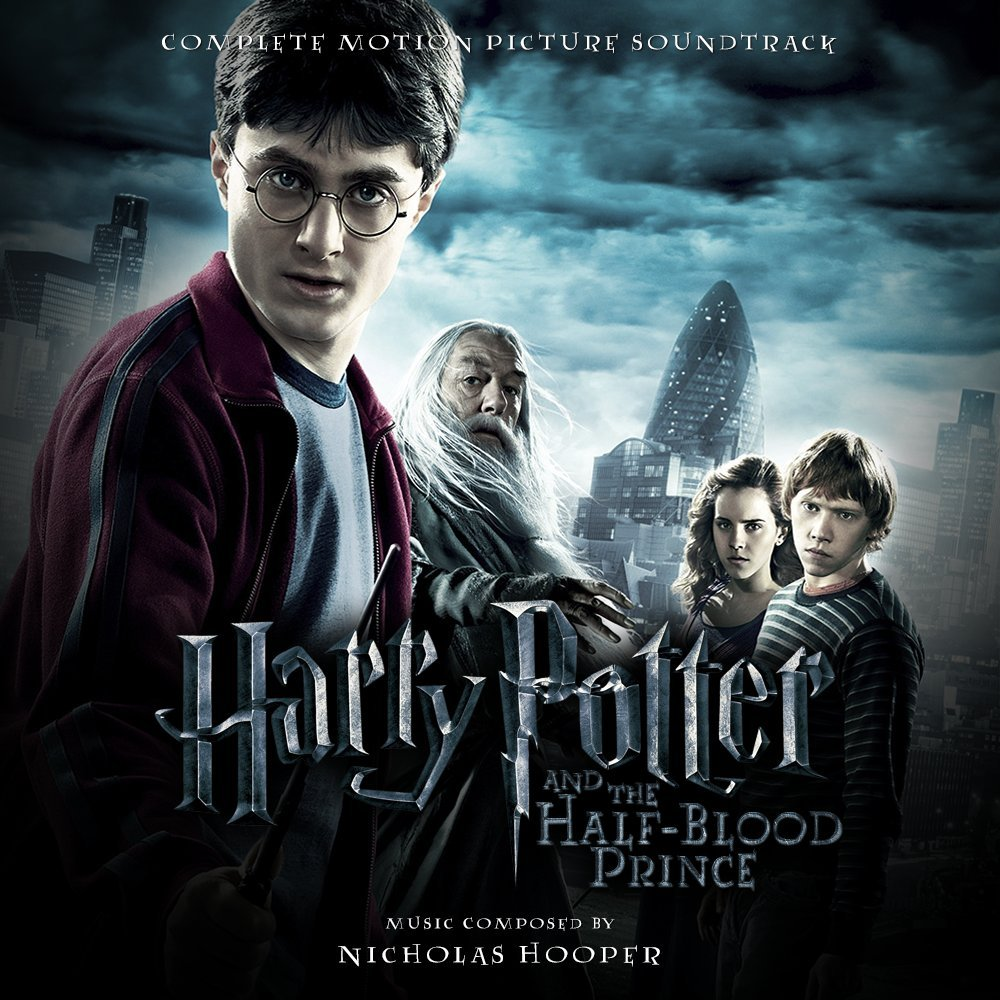

Harry Potter and The Half-Blood Prince
(Harry Potter and the Half-Blood Prince deepens the conflict as Voldemort’s power spreads across both the wizarding and Muggle worlds. Dumbledore begins personally mentoring Harry, showing him memories that reveal Voldemort’s past and the secret of Horcruxes—objects containing fragments of his soul, which make him immortal. Meanwhile, Draco Malfoy is tasked with a dangerous mission by Voldemort, and Severus Snape swears an Unbreakable Vow to protect him. At Hogwarts, Harry discovers a mysterious textbook filled with helpful notes signed by the “Half-Blood Prince,” which aids him in his studies. The story builds toward tragedy when Dumbledore and Harry retrieve a Horcrux, only for Snape to kill Dumbledore during Draco’s mission. The book closes with Harry and his friends vowing to continue the fight against Voldemort by hunting down the remaining Horcruxes.)
